TED – це неприбуткова фундація, і так само всі події TEDx проводяться не заради фінансової винагороди. Отже, TEDxKyiv відбувається лише завдяки щедрій підтримці особливої групи компаній та організацій, які вірять та підтримують рушійну силу ідей. Подібно до головної платформи TED, та з повагою до наших партнерів, ми робимо великий наголос на якість – від продакшну події до відносин з людьми та компаніями.
TEDxKyiv 2014 Шукаємо партнерів за духом та енергією
презентацiя для партнерiв- Горизонти пошуку ідей та рішень
Нові кордоникосмос, океан…
Ресурсиенергетичні, водні

Освітанові формати нового знання
Здоров’яяк людина опановує нові виклики
Технологіїмедичні, ІТ, транспорт
Безпекаекологічна, інформаційна
- 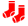
Родина та взаємодія в суспільстві
Запрошуємо до партнерства:
Талановиті компанії, що є агентами змін та генераторами проривних ідей, будiвники майбутнього.
Компанії, що задають тренди, відкриті до діалогу та спільноти.
Разом із традиційними варіантами визнання (розміщення логотипів, квитки), ми запрошуємо всіх партнерів творчо долучатися до події та спільноти – через участь у попередніх до TEDxKyiv заходах, спільне творення матеріалів для учасників (gift bags) т.і.
І природно, всі партнери де-факто отримують асоціацію з головним брендом TED... закладаючи основи довгострокового партнерства навколо спільного бачення того, як ідеї, технології та освіта допомагають створити краще майбутнє.
Отримуйте як партнер tedxkyiv у фінансових категоріях:
Демократичні пропозиції для будь яких можливостей партнера – від 2 тис.у.о. до 10 тис.у.о. та відповідне партнерське визнання* :
- — Щира подяка зі сцени (визнання партнерів ведучим та логотип на екрані у перервах)
- — Можливість подарунків в пакети учасників (готові сприяти ідеями!) та відкриттів
- — В друкованих матеріалах / на сайті / в медіа / на прес-волі
- — Квитки для представників партнера (від 2 до 10), а також можлива знижка на групи поза квотою квитків (для представництв, філій компанії, підшефних організацій)
- — Логотипи на футболках команди
- — Логотипи на слайді, що передує відео -виступу спікерів (викладається на youtube.com)**
- — Аfter-party / вечеря спікерів під егідою Генерального партнера (пакет 10 тис.у.о.)
* - Логотипи партнерів не перевищують за розміром лого TEDxKyiv (умова ліцензії)
** - Слайд – 3 секунди, канал – TEDxTalks
Розглядаємо та створюємо НОВІ ФОРМАТИ ВИЗНАННЯ – спитайте в нас
Вітаємо також партнерів in-kind:
- — Відео-продакшн
- — Широкоформатний друк
- — Напої та кейтеринг
- — Сувенірна продукція
- — Медіа / промо
Партнерські пакети перераховуються у вартості підтримки товарами / послугами.
Маєте інші можливості та бажання СПІВТВОРИТИ?
З радістю обговоримо та запропонуємо захоплюючі формати!
зв’язатися з командоюФормат TED / TEDx
TED
- — Світовий фонд, присвячений Ідеям, Вартим Поширення
- — Глобальний рух за осмислені зміни через силу нових ідей та відкриттів
- — 2 щорічні конференції (спікери: зірки Нобелю та Оскару, громадські активісти), вебсайт з вільним переглядом виступів TED.com, суспільні ініціативи
- незалежно організовані
- в дусі, форматі та за ліцензією TED
- 6000 конференцій за 4 роки
- у 1700 містах 145 країн світу
Переваги TedxKyiv
Унікальний високовірусний контент
Оригінальні ідеї + відібрані та підготовлені спікери = в одному залі.
Причетність до світової спільноти TED/TEDx
- — Більше 1,5 млн зареєстрованих глядачів
- — Ствердження України на світовій карті
Демократична та різноманітна аудиторія
Дбайливе кураторство учасників в залі задля максимально різнобічного діалогу: за професійним / суспільним інтересом та віком
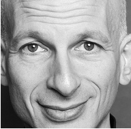
Сет Годін.
Beatles не винайшли тінейджерів. Вони лише вирішили їх очолити.
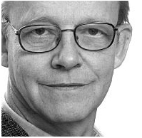
Ганс Рослінґ.
Країни рухаються більш-меньш із тією ж швидкістю, що гроші та здоров'я.
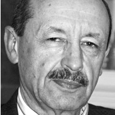
Пауль Пшенічка.
TED – загалом прекрасний проект, який дозволяє широкій Інтернет-аудиторії познайомитися "вживу" з цікавими ідеями чи досягненнями.
- ньюзмейкерідеї та відкриття зі сцени
- медіа-каналвідео-виступи у вільному доступі на youtube-ресурсі TEDxTalks
Медіа підтримка
- 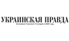
- 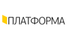
- 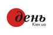
- 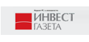
- 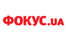
- 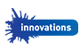
- 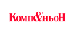